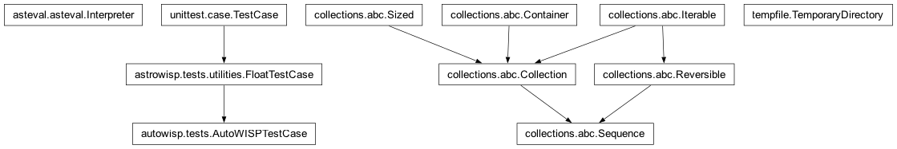

autowisp.tests package
Class Inheritance Diagram

Autowisp unit-test init.
- class autowisp.tests.AutoWISPTestCase(methodName='runTest')[source]
Bases:
FloatTestCase
Base class for AutoWISP tests.
- _point_at_test_database()[source]
Send this test’s project database to the configured server.
Nothing else in the suite – and no pipeline or step code – needs to know.
set_project_homealready readsautowisp_db.urlfrom the project home when it is there, and every step launched byrun_step()runs with that directory as its cwd, so it resolves the same file. Writing it here therefore redirects the whole run, subprocesses included.A no-op when the variable is unset, which is the default.
- _test_failed()[source]
Whether this test has just failed or errored.
Read off the result rather than a flag the test sets, so nothing has to be remembered at the end of every test method. Two things make the obvious shortcuts wrong:
_outcome.successis still True here (it is reset per test part, andtearDownis its own part), andresult.errors/result.failuresaccumulate over the whole run – so the entries have to be matched against this test rather than merely counted.- Returns:
True if this test recorded a failure or an error.
- Return type:
- preserve_failed_processing = True
Set False by a test that does not want its processing directory kept even when it fails (nothing does at present). Failure is detected from the test result, so a passing test never has to say anything – the previous arrangement, where each test opted in by setting
successful_test, silently preserved the directory of every test that forgot to.
- preserve_processing_dir = None
- classmethod set_test_directory(test_dirname, processing_dirname, failed_test_dirname, preserve_processing_dir=None)[source]
Set the directory where data to test against is located.
- stage_catalog_cache = True
- autowisp.tests.SERVER_URL_ENV = 'AUTOWISP_TEST_DB_URL'
Environment variable naming a MySQL/MariaDB URL to test against.
Unset – the default, and what a developer gets locally – puts every project database in a throwaway SQLite file, as before. Setting it runs the same tests against a centralised server, which is a supported deployment but one the suite has never exercised: SQLite compares strings case-sensitively, does not enforce foreign keys or column widths, and serialises writers instead of taking row locks.
- autowisp.tests._redirected_user_data_dir(*args, **kwargs)[source]
Return the throwaway directory whatever application is asked for.
- autowisp.tests._user_data_dir = <TemporaryDirectory '/var/folders/hm/n65vjtk55fg79mcg2sz1g6280000gp/T/autowisp_tests_qzkwxdyl'>
Throwaway stand-in for the real user data directory.
Five call sites derive paths from
platformdirs.user_data_dir("autowisp"): the BUI database andbui.log(django_project/settings.py), the default project home when none is given (database/interface.py), and therun_pipeline.outcapture file (run_pipeline.pyandprocessing/views.py). Redirecting the lookup once, here, means no test can reach the developer’s real data by forgetting to override something – the BUI database in particular holds their project list.This belongs in the package
__init__rather than__main__because CI also runs modules directly (python -m unittest autowisp.tests.…), which never loads__main__. Importing anything underautowisp.testsexecutes this first, which matters becausesettings.pyresolves the directory at import time.
- autowisp.tests.empty_server_database(url)[source]
Drop every table in url, including
alembic_version.SQLite gets a fresh file per test simply by using a fresh directory. A server has one database shared by the whole run, so it has to be emptied between tests instead – and completely, since a leftover
alembic_versionwould make the next project look migrated when its tables are gone.
- autowisp.tests.server_test_url()[source]
Return the server URL to test against, or None for SQLite.
Empty counts as unset. A CI matrix that carries the URL as a per-cell key gives every other cell the variable set to an empty string rather than absent, and those cells must stay on SQLite.
Submodules
- autowisp.tests.error_fixtures module
- autowisp.tests.fits_test_case module
- autowisp.tests.generate_catalog_test_data module
- autowisp.tests.get_test_data module
- autowisp.tests.h5_test_case module
- autowisp.tests.test_bui_db_config module
- autowisp.tests.test_bui_models module
- autowisp.tests.test_calibrate module
- autowisp.tests.test_catalog module
- autowisp.tests.test_channel_binding module
- Class Inheritance Diagram
TestTwoChannelRowTestTwoChannelRow._add_camera()TestTwoChannelRow._add_session()TestTwoChannelRow._fill_database()TestTwoChannelRow.jd_values()TestTwoChannelRow.mono_valuesTestTwoChannelRow.plan_spare()TestTwoChannelRow.row()TestTwoChannelRow.rows_for()TestTwoChannelRow.setUpClass()TestTwoChannelRow.tearDownClass()TestTwoChannelRow.test_a_colour_session_offers_a_choice()TestTwoChannelRow.test_a_column_per_axis_that_binds_one()TestTwoChannelRow.test_a_completed_row_summons_a_spare()TestTwoChannelRow.test_a_monochrome_session_arrives_bound()TestTwoChannelRow.test_no_spare_once_every_binding_is_present()TestTwoChannelRow.test_one_quantity_on_both_axes_in_two_channels()TestTwoChannelRow.test_rebinding_an_earlier_row_summons_nothing()TestTwoChannelRow.test_the_columns_are_split_between_the_axes()TestTwoChannelRow.test_which_rows_are_drawn()TestTwoChannelRow.values_of
_first_jd_night_separation
- autowisp.tests.test_crash_report module
- Class Inheritance Diagram
TestBuildCrashReportTestCollectEnvironmentTestCollectProvenanceTestCrashReportCliTestFindErrorProgressTestFindErrorProgress.setUp()TestFindErrorProgress.test_filters_by_image_type_when_image_known()TestFindErrorProgress.test_none_for_stepless_or_runless()TestFindErrorProgress.test_resolves_by_run_and_step()TestFindErrorProgress.test_resolves_lightcurve_step()TestFindErrorProgress.test_select_logs_empty_without_progress()
TestScrubConfigValuesTestScrubMappingTestScrubText
- autowisp.tests.test_create_lightcurves module
- autowisp.tests.test_database_migration module
- Class Inheritance Diagram
BackendMixinTestAdditiveMigrationsTestAdditiveMigrations._apply()TestAdditiveMigrations._make_old_project()TestAdditiveMigrations.setUp()TestAdditiveMigrations.test_adds_missing_code_version()TestAdditiveMigrations.test_adds_missing_resolved_to_old_error_table()TestAdditiveMigrations.test_creates_missing_error_table()TestAdditiveMigrations.test_idempotent()TestAdditiveMigrations.test_preexisting_rows_and_data_preserved()
TestCheckProjectSchemaTestConcurrentMigrationTestMigrateProjectTestMigrateProject._legacy_engine()TestMigrateProject.test_backup_is_taken_before_migrating()TestMigrateProject.test_crash_window_between_ddl_and_version_update()TestMigrateProject.test_fresh_database_is_stamped_without_running_revisions()TestMigrateProject.test_legacy_database_is_baselined_then_upgraded()TestMigrateProject.test_migration_is_idempotent()TestMigrateProject.test_older_database_reaches_the_same_state()TestMigrateProject.test_project_creation_leaves_no_backup()TestMigrateProject.test_server_refuses_without_a_confirmed_backup()
TestRevisionChainTestRevisionChain.setUp()TestRevisionChain.test_baseline_is_the_root()TestRevisionChain.test_no_revision_has_two_parents()TestRevisionChain.test_numbers_increase_along_the_chain()TestRevisionChain.test_revision_ids_are_numbered_slugs()TestRevisionChain.test_revision_ids_fit_the_version_table()TestRevisionChain.test_single_head()
TestSchemaDriftTestSqliteMigrationLockTestSqliteMigrationLock._engine()TestSqliteMigrationLock._write_from_elsewhere()TestSqliteMigrationLock.setUp()TestSqliteMigrationLock.test_begin_immediate_excludes_a_second_writer()TestSqliteMigrationLock.test_guard_is_removed_afterwards()TestSqliteMigrationLock.test_transaction_alone_does_not_hold_the_write_lock()
TestTimestampTriggersTestUpgradeFromReleaseTestUpgradeFromRelease._build_release_schema()TestUpgradeFromRelease._export_release()TestUpgradeFromRelease.release_baselinesTestUpgradeFromRelease.setUp()TestUpgradeFromRelease.test_a_value_too_long_to_keep_stops_the_migration()TestUpgradeFromRelease.test_every_release_keeps_its_timestamp_triggers()TestUpgradeFromRelease.test_every_release_upgrades_to_the_current_schema()
_git()_repo_root()expected_timestamp_triggers()on_server()
- autowisp.tests.test_detrending_stat module
- autowisp.tests.test_diagnostic_expressions module
- autowisp.tests.test_diagnostic_types module
- autowisp.tests.test_diagnostics_views module
- Class Inheritance Diagram
DiagnosticsViewTestCaseTestAvailableQuantitiesTestAvailableQuantities._recorded()TestAvailableQuantities.test_a_broken_expression_is_hidden_rather_than_raised()TestAvailableQuantities.test_a_concrete_quantile_is_judged_against_the_raw_names()TestAvailableQuantities.test_a_dependency_makes_its_dependents_unavailable()TestAvailableQuantities.test_a_jd_only_expression_is_always_available()TestAvailableQuantities.test_an_unknown_name_is_hidden_too()TestAvailableQuantities.test_expression_hidden_where_an_input_is_not_recorded()TestAvailableQuantities.test_expression_offered_where_its_inputs_are_recorded()TestAvailableQuantities.test_expressions_join_the_same_flat_list()TestAvailableQuantities.test_recorded_names_are_raw()TestAvailableQuantities.test_selector_offers_the_family_not_its_members()
TestExpressionAxisTestExpressionAxis.libraryTestExpressionAxis.test_a_composed_expression_reaches_through()TestExpressionAxis.test_an_expression_against_a_diagnostic()TestExpressionAxis.test_an_unknown_name_is_refused()TestExpressionAxis.test_offered_wherever_its_diagnostics_are()TestExpressionAxis.test_restricted_to_the_types_recording_its_inputs()TestExpressionAxis.test_the_values_are_the_expression_evaluated()
TestImageTypeSplitTestImageTypeSplit.test_a_type_without_the_diagnostic_is_absent()TestImageTypeSplit.test_canonical_list_holds_only_its_own_type()TestImageTypeSplit.test_each_type_gets_its_own_series()TestImageTypeSplit.test_the_type_is_shown_in_the_table()TestImageTypeSplit.test_values_are_not_taken_across_types()
TestQuantileSeriesExpansionTestRowIdTestRowId.round_trip()TestRowId.test_an_ambiguous_field_is_refused()TestRowId.test_plain_row()TestRowId.test_quantile_row()TestRowId.test_siblings_differ_by_their_ordinal()TestRowId.test_the_image_type_is_part_of_the_identity()TestRowId.test_the_key_takes_its_channels_from_the_client()TestRowId.test_underscores_anywhere_are_harmless()
TestSeriesGroupingTestSharedTimeOffset_diagnostic_names_first_bg_center_first_jd_frames_per_night_night_separation_quantile_names
- autowisp.tests.test_epd module
- autowisp.tests.test_error_capture_middleware module
- Class Inheritance Diagram
TestErrorCaptureMiddlewareTestErrorCaptureMiddleware.setUp()TestErrorCaptureMiddleware.setUpClass()TestErrorCaptureMiddleware.tearDownClass()TestErrorCaptureMiddleware.test_recording_failure_is_swallowed()TestErrorCaptureMiddleware.test_request_snapshot_keys_only()TestErrorCaptureMiddleware.test_unknown_exception_wrapped_and_recorded()
_mock_request()
- autowisp.tests.test_error_cli module
- autowisp.tests.test_error_context module
- Class Inheritance Diagram
TestAmbientAccessorsTestCaptureErrorsTestCaptureErrors.test_bare_value_error_wrapped_to_step_subclass()TestCaptureErrors.test_existing_autowisp_error_passes_through_stamped()TestCaptureErrors.test_no_run_leaves_pipeline_run_none()TestCaptureErrors.test_pipeline_and_bui_wrapping()TestCaptureErrors.test_preset_step_name_not_overwritten()TestCaptureErrors.test_success_returns_value()TestCaptureErrors.test_unknown_step_falls_back_to_base_steperror()TestCaptureErrors.test_wrap_unknown_false_passes_through()
TestErrorContextDataclassTestErrorContextManagerTestExitSignalDecodeTestFromConfigTestNestingGuardTestPoolPropagationTestPoolPropagation.test_bare_exception_wrapped_to_mapped_step_error()TestPoolPropagation.test_faulthandler_dumps_native_traceback()TestPoolPropagation.test_step_error_propagates_with_context()TestPoolPropagation.test_worker_crashed_carries_scoped_config()TestPoolPropagation.test_worker_crashed_carries_step_name()TestPoolPropagation.test_worker_crashed_dedups_shared_related_file()TestPoolPropagation.test_worker_crashed_names_inflight_input()TestPoolPropagation.test_worker_crashed_promotes_related_files()TestPoolPropagation.test_worker_crashed_records_exit_signal()TestPoolPropagation.test_worker_crashed_records_resources()TestPoolPropagation.test_worker_error_carries_config()TestPoolPropagation.test_worker_error_carries_reference_files()TestPoolPropagation.test_worker_error_carries_related_file()TestPoolPropagation.test_worker_hard_exit_raises_worker_crashed()
TestProcessQueuePropagationTestResourceSnapshotTestWorkerEntryTestWorkerEntry.test_autowisp_error_passes_through_stamped()TestWorkerEntry.test_bare_exception_wrapped_to_step_subclass()TestWorkerEntry.test_inflight_map_cleared_on_error()TestWorkerEntry.test_inflight_map_tracks_then_clears_item()TestWorkerEntry.test_resolve_related_files_callable_returning_many()TestWorkerEntry.test_resolve_related_files_from_kind_and_callable()TestWorkerEntry.test_resolve_related_files_is_total()TestWorkerEntry.test_subprocess_id_not_overwritten_by_later_stamp()TestWorkerEntry.test_success_returns_value()
_ContextTestCase_dr_file()_hard_exit_worker()_instant_exit()_lc_with_reference()_nested_run_pool_worker()_noop()_pool_config()_process_queue_worker()_raise_find_stars_error()_raise_value_error()_segfault_worker()
- autowisp.tests.test_error_persistence module
- Class Inheritance Diagram
TestCleanupErrorsTestCleanupErrors._age_error()TestCleanupErrors.setUp()TestCleanupErrors.test_aged_rows_and_sidecars_removed()TestCleanupErrors.test_dangling_row_reference_cleared()TestCleanupErrors.test_delete_all_sidecars_keeps_foreign_files()TestCleanupErrors.test_orphan_files_removed()TestCleanupErrors.test_sweep_keeps_valid_sidecar()
TestParseDurationTestPersistErrorTestPersistError.test_artifact_fks_resolved_from_related_files()TestPersistError.test_delete_missing_error_is_noop()TestPersistError.test_delete_removes_row_and_sidecar()TestPersistError.test_large_payload_is_gzipped()TestPersistError.test_missing_sidecar_degrades_to_none()TestPersistError.test_row_and_sidecar_are_complementary()TestPersistError.test_sidecar_failure_leaves_valid_row()TestPersistError.test_worker_crashed_persists_step_name()
TestRunPipelineHandler_PersistenceTestCase
- autowisp.tests.test_error_render module
- Class Inheritance Diagram
TestErrorCountsTestErrorCounts.setUp()TestErrorCounts.test_all_resolved_keeps_total()TestErrorCounts.test_counts_by_step_excludes_stepless()TestErrorCounts.test_counts_exclude_resolved()TestErrorCounts.test_gate_always_includes_pipeline_errors()TestErrorCounts.test_gate_excludes_bui_errors()TestErrorCounts.test_gate_excludes_resolved()TestErrorCounts.test_gate_scopes_step_errors_to_selected_steps()TestErrorCounts.test_list_shows_resolved_open_first()TestErrorCounts.test_step_filter_on_list_rows()TestErrorCounts.test_total_count()
TestErrorDetailTestErrorListRowsTestErrorSummaryTestFormatDetailText_RenderTestCase
- autowisp.tests.test_evaluator module
- autowisp.tests.test_exception_hierarchy module
- Class Inheritance Diagram
TestCatalogRetryExhaustionTestExceptionHierarchyTestExceptionHierarchy.test_all_classes_pickle_round_trip()TestExceptionHierarchy.test_every_concrete_class_sets_component()TestExceptionHierarchy.test_full_payload_pickle_round_trip()TestExceptionHierarchy.test_minimal_construction_defaults()TestExceptionHierarchy.test_stamp_subprocess_sets_and_is_idempotent()TestExceptionHierarchy.test_with_pipeline_run_attaches_and_sets_crashed()TestExceptionHierarchy.test_with_pipeline_run_keeps_existing_crashed()
TestFrozenRowTestMigratedExceptionsTestMigratedExceptions.test_catalog_error_is_cross_cutting_step_error()TestMigratedExceptions.test_convergence_error_is_pure_step_error()TestMigratedExceptions.test_hdf5_layout_error_is_pipeline()TestMigratedExceptions.test_no_stdlib_mixins()TestMigratedExceptions.test_outside_image_error_specializes_calibration()
TestSnapshotRowTestToDetailDict_ToyRow_concrete_exception_classes()_full_payload()
- autowisp.tests.test_expression_series module
- Class Inheritance Diagram
SeriesValuesTestCaseTestCanonicalImagesTestCrossChannelCountsTestCrossChannelCounts.counts_of()TestCrossChannelCounts.test_a_binding_counts_the_images_having_all_of_it()TestCrossChannelCounts.test_a_channel_never_recorded_counts_nothing()TestCrossChannelCounts.test_nothing_required_counts_nothing()TestCrossChannelCounts.test_one_channel_agrees_with_counting_within_a_channel()
TestCrossChannelValuesTestCrossChannelValues._fill_database()TestCrossChannelValues.drawn()TestCrossChannelValues.expected()TestCrossChannelValues.holeTestCrossChannelValues.hole_positionsTestCrossChannelValues.key()TestCrossChannelValues.missing_channelTestCrossChannelValues.setUpClass()TestCrossChannelValues.tearDownClass()TestCrossChannelValues.test_a_channel_never_recorded_is_undefined()TestCrossChannelValues.test_a_ratio_between_two_channels()TestCrossChannelValues.test_a_value_stays_with_its_own_image()TestCrossChannelValues.test_an_aggregate_spans_one_channel()TestCrossChannelValues.test_one_diagnostic_read_in_two_channels()TestCrossChannelValues.test_the_binding_decides_which_way_round()TestCrossChannelValues.test_two_axes_of_different_kinds_resolve_in_one_query()TestCrossChannelValues.values_of
TestDiagnosticValuesTestDiagnosticValues.recordedTestDiagnosticValues.test_a_channel_nothing_was_recorded_in_is_all_nan()TestDiagnosticValues.test_a_diagnostic_the_type_lacks_is_all_nan()TestDiagnosticValues.test_asking_for_nothing_still_gives_the_images()TestDiagnosticValues.test_each_channel_is_asked_for_by_its_whole_key()TestDiagnosticValues.test_every_array_is_the_same_length()TestDiagnosticValues.test_one_diagnostic_read_in_two_channels()TestDiagnosticValues.test_time_comes_from_the_image_row()TestDiagnosticValues.test_values_land_against_their_own_images()
TestSeriesValuesTestTiedJulianDates
- autowisp.tests.test_expressions module
- Class Inheritance Diagram
SlotTestCaseTestBareAggregatesTestCheckingTestChecking.check()TestChecking.test_a_good_expression_has_no_problems()TestChecking.test_cycle_with_an_existing_expression()TestChecking.test_name_may_not_shadow_a_diagnostic()TestChecking.test_name_must_be_a_slug()TestChecking.test_problems_accumulate()TestChecking.test_self_reference_is_a_cycle()TestChecking.test_statements_are_reported_not_raised()TestChecking.test_unknown_name_is_reported()
TestDependentsTestNeededValuesTestNeededValues.test_a_binding_of_the_wrong_length_is_refused()TestNeededValues.test_one_expression_at_two_bindings_needs_both()TestNeededValues.test_one_quantity_asked_for_at_two_bindings()TestNeededValues.test_slots_bound_the_other_way_round_are_followed()TestNeededValues.test_the_time_is_found_through_a_bare_reference()
TestNoProjectNeededTestOrderingTestOrdering.test_chain_is_ordered()TestOrdering.test_cycle_names_every_expression_involved()TestOrdering.test_cycle_names_the_loop_and_not_its_dependents()TestOrdering.test_diamond_places_the_shared_expression_once()TestOrdering.test_needed_diagnostics_are_transitive()TestOrdering.test_only_the_targets_subtree_is_ordered()TestOrdering.test_plain_diagnostic_needs_no_evaluation()TestOrdering.test_unknown_target_is_refused()TestOrdering.test_unresolvable_reference_is_refused()
TestQuantileNamesTestQuantileNames.test_a_near_miss_is_still_unresolvable()TestQuantileNames.test_a_quantile_may_not_be_taken_as_a_name()TestQuantileNames.test_a_quantile_resolves_as_a_variable()TestQuantileNames.test_a_quantile_survives_the_ordering_pass()TestQuantileNames.test_the_family_name_does_not_resolve_as_a_variable()TestQuantileNames.test_the_family_name_may_not_be_taken_either()
TestReachableNamesTestReferencedNamesTestRenamingReferencesTestRenamingReferences.test_a_longer_name_containing_it_is_untouched()TestRenamingReferences.test_a_string_literal_is_untouched()TestRenamingReferences.test_an_unmentioned_name_changes_nothing()TestRenamingReferences.test_every_use_is_renamed()TestRenamingReferences.test_offsets_survive_a_non_ascii_character()TestRenamingReferences.test_spacing_and_parentheses_survive()
TestSlotEvaluationTestSlotEvaluation.test_a_chain_of_channel_free_expressions()TestSlotEvaluation.test_a_nested_binding_is_not_the_callers()TestSlotEvaluation.test_a_plain_diagnostic_is_a_quantity_too()TestSlotEvaluation.test_a_quantity_over_the_time_alone()TestSlotEvaluation.test_an_instantiation_is_computed_once()TestSlotEvaluation.test_an_unfetched_channel_is_reported()TestSlotEvaluation.test_both_axes_at_once_share_their_instantiations()TestSlotEvaluation.test_one_body_evaluated_at_two_bindings()TestSlotEvaluation.test_one_diagnostic_drawn_in_two_channels()TestSlotEvaluation.test_only_what_is_reached_is_built()TestSlotEvaluation.test_slotted_and_channel_free_in_one_expression()
TestSlotSyntaxTestSlotSyntax.test_a_slot_must_be_a_whole_number()TestSlotSyntax.test_arity_is_a_rule_not_a_table()TestSlotSyntax.test_one_slot_is_still_a_tuple()TestSlotSyntax.test_parameters_are_derived_and_ordered()TestSlotSyntax.test_parameters_are_sorted_whatever_order_the_body_uses()TestSlotSyntax.test_references_keep_their_slots_and_repeats()
_library
- autowisp.tests.test_find_stars module
- autowisp.tests.test_fit_magnitudes module
- autowisp.tests.test_fit_source_extracted_psf_map module
- autowisp.tests.test_fit_star_shape module
- autowisp.tests.test_full_pipeline module
- autowisp.tests.test_lc_filter module
- Class Inheritance Diagram
TestCatalogSourceListFilterTestLCFilterTestLCFilter._astrometried_dr_files()TestLCFilter._compare_lc()TestLCFilter._epd_ignore()TestLCFilter._full_lc_ids()TestLCFilter._is_postprocessing()TestLCFilter._lc_ids()TestLCFilter._run_restricted_lc()TestLCFilter._stage_mag_limited_lc_catalog()TestLCFilter.test_bright_mag_limit()TestLCFilter.test_combined()TestLCFilter.test_manual_source_list()
- autowisp.tests.test_measure_aperture_photometry module
- autowisp.tests.test_parameter_description_length module
- autowisp.tests.test_parse_config_overwrites module
- Class Inheritance Diagram
TestParseConfigOverwritesTestParseConfigOverwrites.test_blank_lines_skipped()TestParseConfigOverwrites.test_colon_separator()TestParseConfigOverwrites.test_comment_only_lines_skipped()TestParseConfigOverwrites.test_dash_and_dot_in_key()TestParseConfigOverwrites.test_double_quoted_value()TestParseConfigOverwrites.test_inline_comment_stripped()TestParseConfigOverwrites.test_key_equals_value()TestParseConfigOverwrites.test_key_with_empty_value()TestParseConfigOverwrites.test_key_without_value()TestParseConfigOverwrites.test_later_value_wins()TestParseConfigOverwrites.test_non_parameter_keys_excluded()TestParseConfigOverwrites.test_section_headers_skipped()TestParseConfigOverwrites.test_semicolon_preserved_in_value()TestParseConfigOverwrites.test_single_quoted_value()TestParseConfigOverwrites.test_test_cfg_like_block()
- autowisp.tests.test_project_creation_guard module
- autowisp.tests.test_provenance_resolver module
- autowisp.tests.test_related_files module
- Class Inheritance Diagram
TestCatalogScopesTestHDF5ProductsAttachThemselvesTestHDF5ProductsAttachThemselves._dr_pair()TestHDF5ProductsAttachThemselves.setUpClass()TestHDF5ProductsAttachThemselves.tearDownClass()TestHDF5ProductsAttachThemselves.test_in_memory_product_attaches_nothing()TestHDF5ProductsAttachThemselves.test_merit_step_names_the_dr_it_failed_on()TestHDF5ProductsAttachThemselves.test_nested_products_all_attach()TestHDF5ProductsAttachThemselves.test_open_for_reading_attaches_as_input()TestHDF5ProductsAttachThemselves.test_psf_map_step_names_the_dr_it_failed_on()
TestMainProcessScopesTestMainProcessScopes.test_add_images_to_db_scopes_the_raw_image()TestMainProcessScopes.test_calibrate_scopes_the_raw_image_and_masters()TestMainProcessScopes.test_calibrate_without_masters_scopes_only_the_image()TestMainProcessScopes.test_stack_to_master_flat_scopes_both_masters()TestMainProcessScopes.test_stack_to_master_scopes_frames_and_master()
TestWorkerPoolClassifiersTestWorkerPoolClassifiers._captured_classifier()TestWorkerPoolClassifiers._detrending_classifier()TestWorkerPoolClassifiers._magfit_classifier()TestWorkerPoolClassifiers.test_detrending_passes_lightcurve_and_photref()TestWorkerPoolClassifiers.test_detrending_without_photref_passes_only_the_lightcurve()TestWorkerPoolClassifiers.test_fit_star_shape_passes_the_frame_set()TestWorkerPoolClassifiers.test_magfit_passes_dr_and_both_photrefs()TestWorkerPoolClassifiers.test_magfit_without_master_photref()
_StampedFilesMixin_StubRaise_pairs()
- autowisp.tests.test_solve_astrometry module
- autowisp.tests.test_source_finder module
- autowisp.tests.test_stack_to_master module
- autowisp.tests.test_templates module
- autowisp.tests.test_tfa module
- autowisp.tests.test_tfa_num_templates module
- autowisp.tests.test_timestamp_triggers module
- autowisp.tests.update_hdf5_contents module